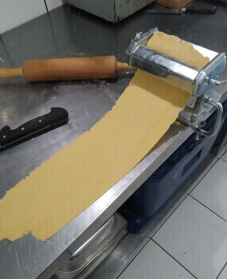

Ô Phil des Saveurs
Le 100% fait-maison

La viande de Philippe utilisée pour ses plats préparés est 100% française. Ses légumes de saison, frais, épluchés et finement coupés, donnent des saveurs authentiques à tous ses plats. Ses pates à lasagne et ses pâtes à crêpes faites maison aux bons oeufs frais rendent ses plats tout simplement parfaits.
Tous ces ingrédients, la crème, le lait, les oeufs frais, les légumes, la viande, les épices, les aromates permettent d avoir des plats à la saveur authentique. O Phil des Saveurs prépare ses plats faits-maison dans une cuisine d'une propreté exemplaire et disponibles sur votre marché d'aigues-mortes et de Saint Laurent d'Aigouze.

Manger sainement avec une cuisine sans additif, sans conservateur est une évidence pour Philippe qui en a fait le concept de O Phil des Saveurs.